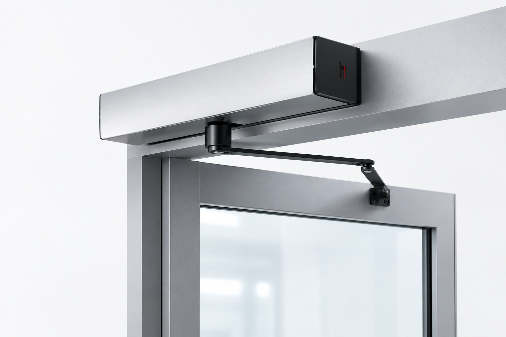

Solutions d'automatisation pour les professionnels
Portes automatiques, rénovation et motorisation.
SlideX conçoit et fabrique des solutions d'automatisation pour les professionnels : portes piétonnes coulissantes, kits de rénovation, motorisations pour portes battantes et accessoires.
Du neuf à la rénovation, des solutions pensées pour être simples à commander, rapides à installer et faciles à maintenir.
Fabrication française · Support technique dédié · Pièces SAV 10 ans



de porte battante
Nos solutions
Une solution pour chaque chantier.
Installation neuve, rénovation d'un équipement existant ou automatisation d'une porte battante : choisissez la solution adaptée à votre chantier.
Portes coulissantes
Portes automatiques coulissantes
1 vantail, 2 vantaux ou télescopique.
Besoin d'aide pour choisir ?
Notre équipe technique vous accompagne dans le choix de la solution la plus adaptée à votre projet.
Support et garantie
Un accompagnement complet pour la tranquillité de vos projets
Garantie 2 ans
Garantie constructeur complète sur tous les composants. Pièces détachées disponibles et support technique réactif.
- Motorisation garantie 2 ans
- Électronique garantie 2 ans
- Pièces détachées disponibles
Service après-vente réactif
Support après-vente rapide avec hotline technique dédiée. Nos experts vous accompagnent en cas de besoin.
- Hotline technique dédiée
- Diagnostic à distance
- Intervention sur site
- Formation utilisateur incluse
Formation incluse
Formation complète à l'installation et à l'utilisation. Documentation technique détaillée et support vidéo.
- Formation installation
- Guide d'utilisation
- Vidéos tutoriels
- Support technique dédié